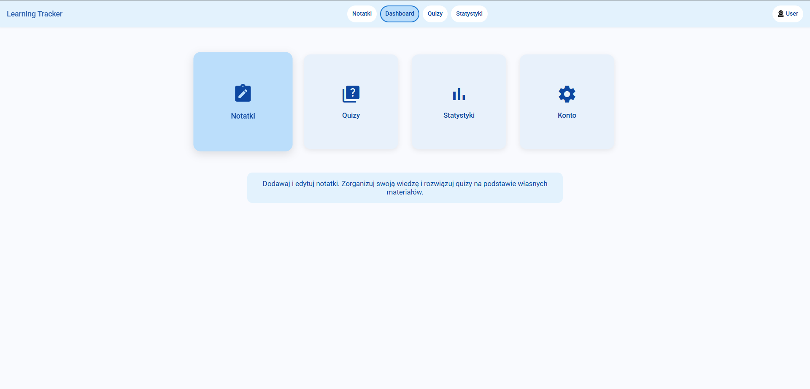
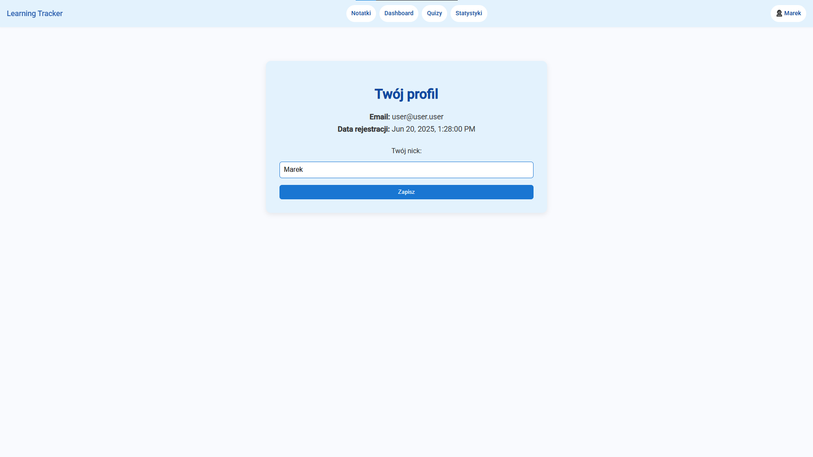
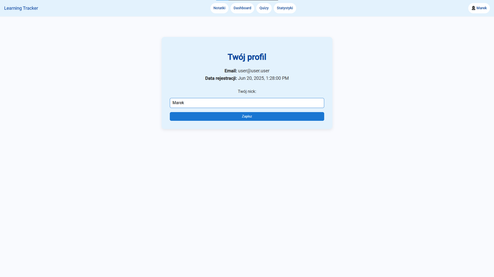

Learning Tracker
Nowoczesna aplikacja edukacyjna, która łączy tworzenie notatek, generowanie quizów z pomocą AI lub bazy danych oraz analizę postępów w oparciu o rozbudowane statystyki.
- Angular
- .NET
- ASP.NET Core
- Firebase
- SQL Server
- Cohere (AI backend)
Możliwości aplikacji
Learning Tracker wspiera naukę, łącząc notatki z interaktywnymi quizami. Każda notatka przypisana jest do kategorii, co pozwala tworzyć pytania dopasowane do tematu.
Dostępne są trzy tryby quizów: AI (generowane z treści notatek), baza danych (pytania przypisane do kategorii) oraz mieszany (łączenie obu metod). Dzięki integracji z Cohere każde pytanie jest unikalne.
Aplikacja umożliwia także przeglądanie i filtrowanie wszystkich pytań z bazy, co pozwala uczyć się lub sprawdzać wiedzę bez konieczności rozwiązywania całego testu.
Technologie i architektura
Wyniki quizów zapisywane są w systemie i prezentowane w panelu statystyk, gdzie StatsComponent wizualizuje dane w formie wykresów (Chart.js), tabel i podsumowań, ułatwiając analizę postępów.
Aplikacja powstała w Angularze (Standalone Components) z backendem w ASP.NET Core. Dane przechowywane są w SQL Serverze, a Firebase zapewnia uwierzytelnianie i integrację w czasie rzeczywistym.
Interfejs jest lekki, nowoczesny i dostosowany do pracy na desktopach i urządzeniach mobilnych.
Zajrzyj do środka aplikacji
Panel główny aplikacji
 

Pomysły na rozwój:
- Ranking użytkowników na podstawie skuteczności
- Rozbudowane quizy z pytaniami wielokrotnego wyboru
- System punktów i poziomów motywacyjnych
- Tryb nauki z inteligentnym powtórzeniem materiału
- Ulepszony interfejs z kolorami notatek i możliwością ich grupowania